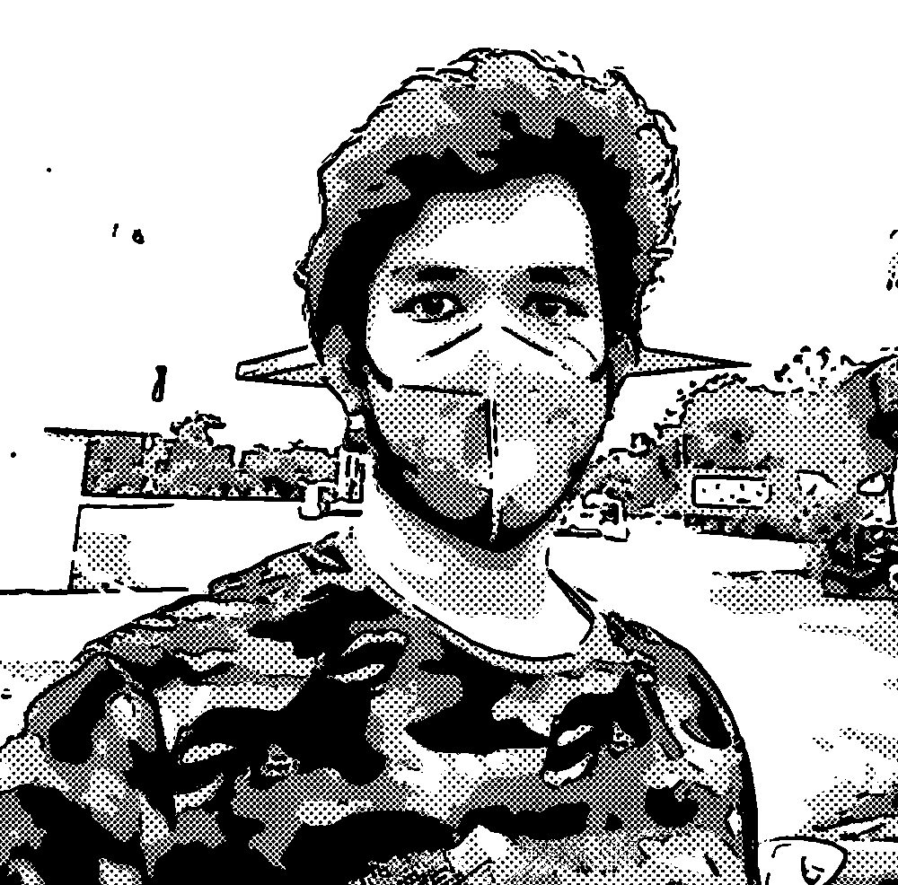
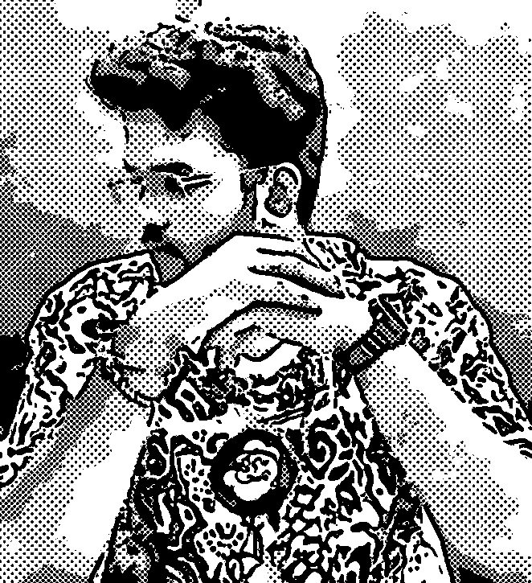

Who I am, and how I think before I touch the keyboard.
Hyderabad. Late night. One more idea.

ドン
I'm Tanush.
B.Tech in Computer Science, specialising in Cybersecurity. Class of 2026.
I think in systems first. What breaks? Who uses it? What is the simplest version that works?
MangaReads it, then builds tools for it.
GamesVideo games, card games, board games.
CookingBuilt an app to help with it.
TravelBetter in person than on a map.
I'm a product thinker more than a pure coder. I design the system and direct AI tools to build it. That is how I work, and this site is the story so far.
Tanush Gupta · Ch.2 Training Arcp. 2 / 4
2Chapter 2 · 第二話
Training arc
Four years of foundations, then a first look at real systems.
2022
SRMIST, Kattankulathur
B.Tech in Computer Science, specialising in Cybersecurity. Four years, 2022 to 2026.
9.64CGPA out of 10
Class of 2026

Jan to Mar 2026
Ramco Systems
Enterprise ERP Division. I fixed a broken testing pipeline and cut the testing timeline by around 70%. I also built RESTful APIs for frontend ERP modules, plus a local API mock layer that let teams test in parallel without touching the production pipeline.
Testing time down ~70%REST APIsAPI mocking
Side quests
Google · Coursera, 2024Cybersecurity Certificate
CiscoNetworking Fundamentals
NPTELComputer Networks
NPTELComputer Architecture
NPTELJava
I like knowing what sits underneath.
Tanush Gupta · Ch.3 Creationsp. 3 / 4
3Chapter 3 · 第三話
Creations
Things I designed, shipped, and broke along the way.
Android · Shipped
InstaTL
A floating bubble you drag over any manga page. ML Kit OCR reads the text, DeepL translates it, and on-device translation steps in as a fallback.
ML Kit OCRDeepLOn-device fallback
Android · Kotlin
ExpenseTracker
Reads payment SMS from banks, GPay, PhonePe and Paytm, tags the location, and shows daily and monthly spend. Data stays on the phone.
v1 on GitHub
Web · Live
SOC Alert Triage
Ingests raw SIEM and EDR alerts and returns structured triage reports: severity, MITRE ATT&CK mapping, and extracted IOCs. Built to ease alert fatigue.
A lightweight intrusion-detection pipeline for resource-constrained IoT devices. Benchmarked LightGBM, Random Forest and SVM on UNSW-NB15; LightGBM reached 99.3% detection accuracy at sub-10ms inference.
A secure group chat where messages are never stored. Encryption (AES-256-GCM with PBKDF2 key derivation) runs in the browser through the Web Crypto API, with room-based access.